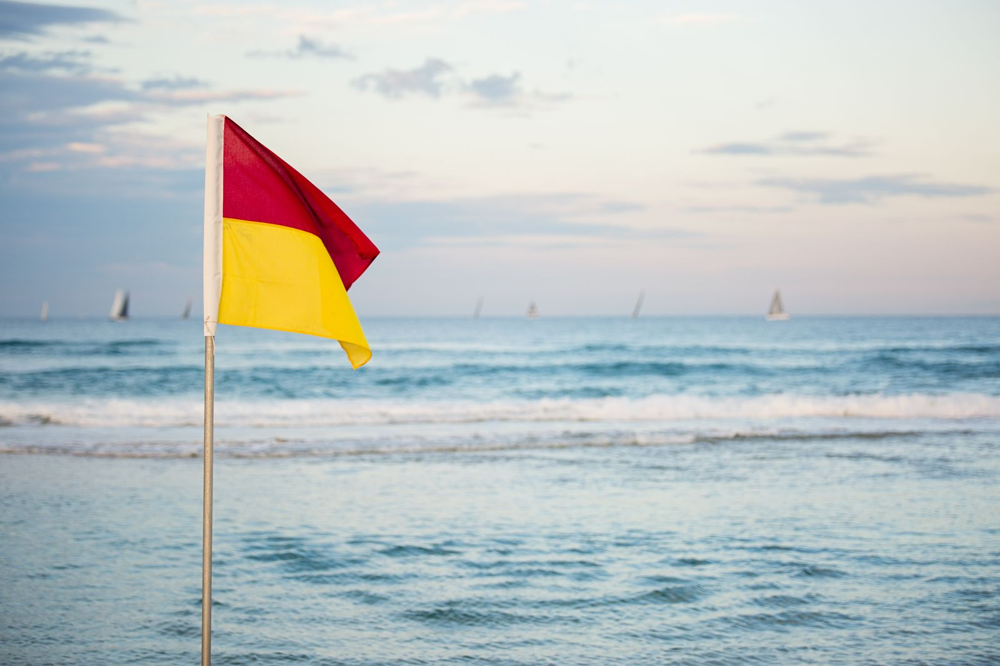
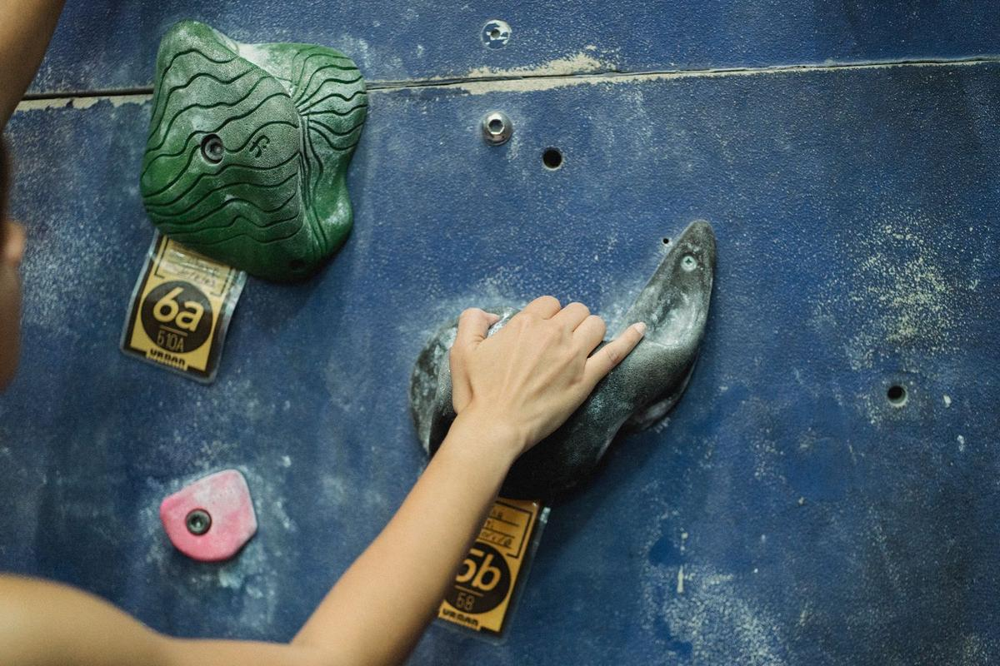
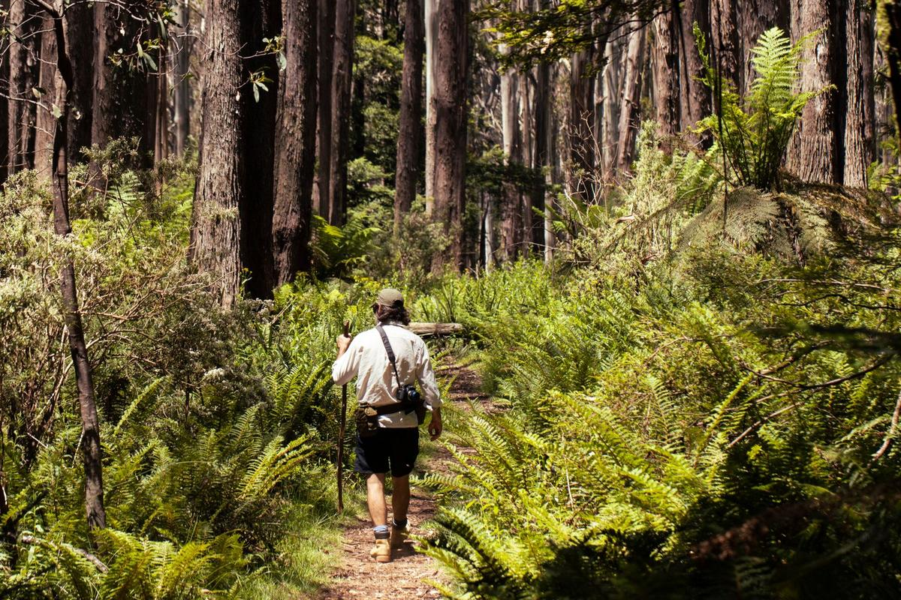
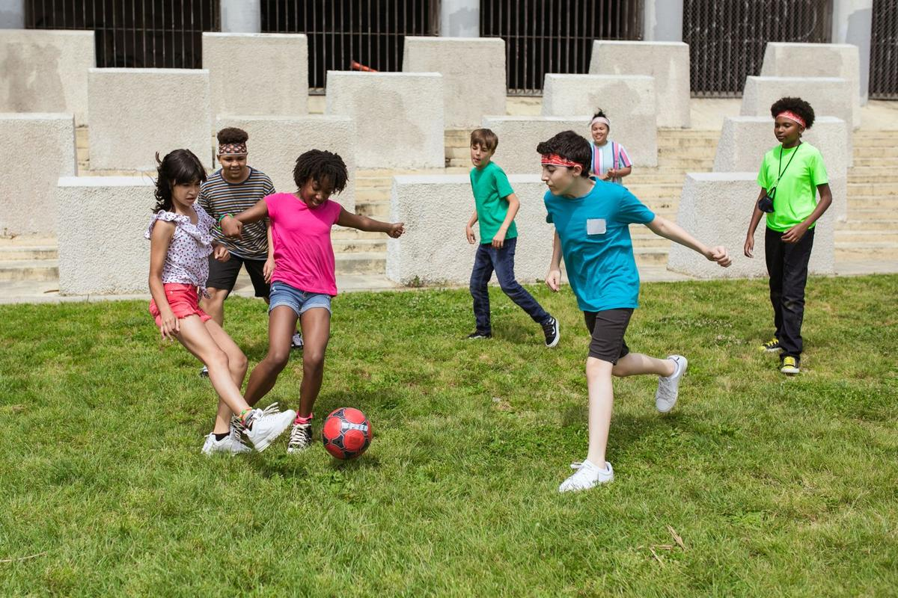
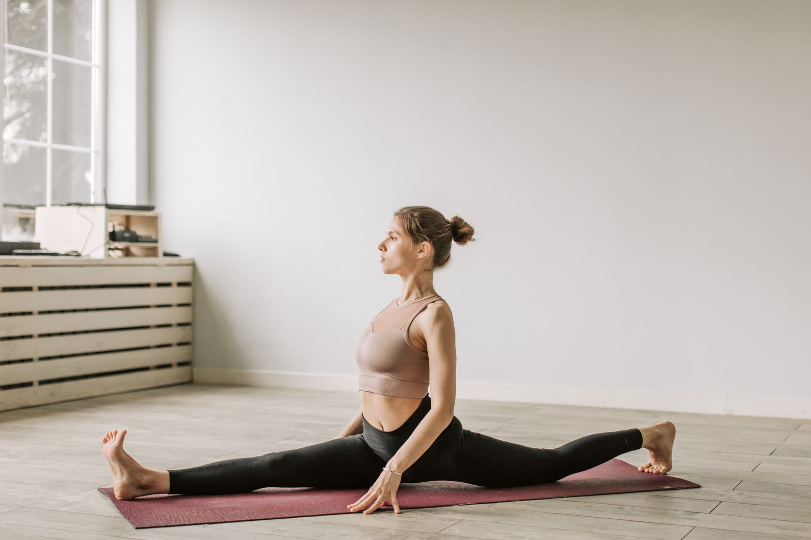
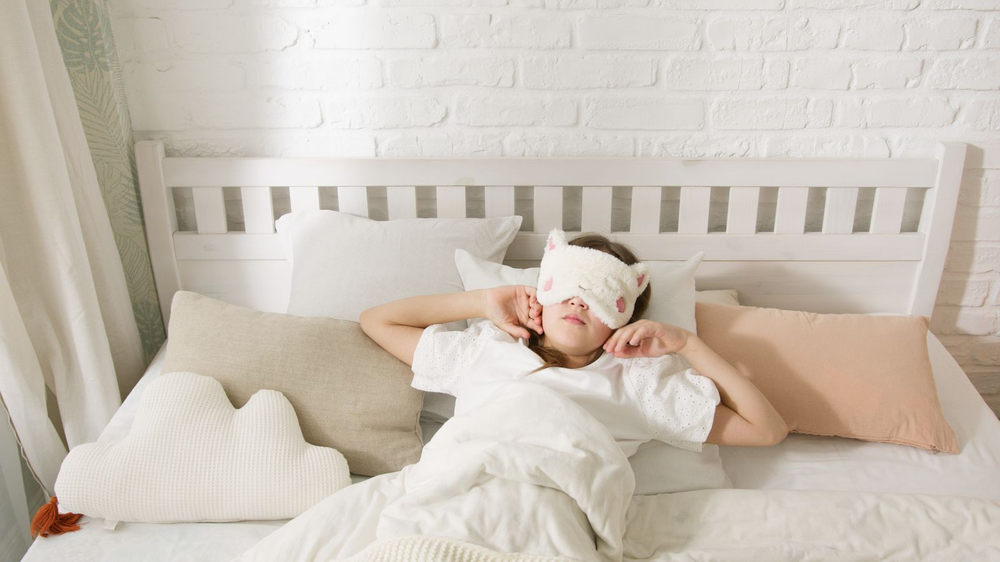

The competition season is done. The leotards are in the wash, the scores are in, and for most of us, summer is finally here.
My own daughter is in an advanced program and trains lots of hours, and she won't get that much time off over the festive season. We want to make sure she gets lots of rest, but still stays active. It's a tough balance.
So I started researching, and came up with these ideas based on that research.
I'm not a coach, a doctor or a sports scientist. I'm a gym dad who did some reading. So treat this as a list of ideas, not advice, and take it for what it is.
First, Gymnastics Is a Bit Different
Just last month, the Australian Sports Commission released a position statement urging kids to play a range of sports and hold off specialising in one until after the age of 12. It linked specialising any earlier to reduced motivation, burnout, injury and psychological stress. Overseas, the American Academy of Pediatrics also suggests young athletes take two to three months off from their sport each year.
Reactions to the statement have been divided. Some people completely agree with it. Others have pointed out that gymnastics is not the kind of sport you can do casually, then all of a sudden go elite at 12. It's also not the sort of sport you can do seasonally if you want to take it to the highest levels. Even the AIS director quoted in the coverage said specialising isn't necessarily bad, and that it depends on the individual athlete and their development.
So for most gymnasts in an advanced program, two to three months off just isn't realistic. Depending on your club and your program, the summer break might be a couple of weeks, if that.
That's fine. It just means the short break you do get is worth using well. From what I've read, even a few weeks of rest can go a long way.
Won't I Go Backwards?
It's a fair question.
Sports scientist Iñigo Mujika describes aerobic fitness as the first thing to fade when training stops, usually starting after a few weeks, while strength tends to hang around a lot longer. Most of his work is on adult athletes, so the exact timelines won't map perfectly onto a teenager. But the research suggests a short break is unlikely to wipe out a year of work, and feeling a little rusty for the first week or two back seems to be pretty normal.
Staying lightly active over the break may help soften that. Which brings me to the ideas.
Idea 1: Get in the Water

It's summer in Australia, so a swim seems like the obvious place to start.
Swimming is widely seen as a low-impact activity. Gymnasts spend all year landing on their wrists, ankles and knees, and a few weeks in the pool or the ocean could give all of that a rest while still keeping the heart and lungs working.
One thing worth knowing: swimming doesn't load your bones the way gymnastics does. A study of adolescent female athletes found swimmers' bone density was no different from non-athletes, while the rhythmic gymnasts in the study had noticeably higher values. So I think of swimming as more of a holiday for the joints than a replacement for what happens in the gym.
And please, swim between the flags. Royal Life Saving counted 104 drowning deaths across Australia over the 2024-25 summer alone. Being a fit gymnast doesn't automatically make you a strong ocean swimmer.
Idea 2: Try Climbing

Bouldering and indoor climbing gyms are everywhere now, and they might be the most gymnast-friendly activity on this list. Grip, upper body strength, body awareness, problem-solving, a bit of fear to manage. Sound familiar?
There's some research behind it too. A study of 50 young climbers aged 10 to 17 found that over eight weeks, the kids who climbed more improved their grip strength relative to their body weight and how long they could hold a bent-arm hang. The research on young climbers is still fairly small, so I wouldn't oversell it. But for a gymnast who spends half the year hanging off bars, it could be a fun way to keep the hands and forearms switched on.
It's also something you can do with friends or family who don't do gymnastics, which is half the point.
Idea 3: Go for a Walk (or a Hike)

Not everything has to be a workout.
A 2022 study of 150 university students compared walking in green, natural areas with walking in the city. Both lowered negative mood, but only the walkers out in nature also got a lift in positive mood. That study was on young adults rather than teenagers, but I'd be surprised if a beach walk or a bush track did any harm.
Walking the dog, walking to the shops instead of getting a lift, or a day hike somewhere new all count.
Idea 4: Play Something Else, Just for Fun

Backyard cricket. Tennis. Riding a bike. Kicking a ball at the park. Anything that isn't gymnastics and doesn't have a coach watching.
An American Academy of Pediatrics report on sport specialisation talks about the value of young athletes trying a range of sports. For a gymnast in a full-time-ish program, summer is one of the few chances to actually do that. No pressure, no scores, just play.
Idea 5: Keep a Little Flexibility Ticking Over

Losing splits or shoulder flexibility over a break is a common worry for gymnasts. I didn't find a study that looks at this for gymnasts specifically, so this one is more common sense than research.
A few minutes of stretching in front of the TV most days seems like an easy way to keep things ticking over. Not training, just maintenance.
Idea 6: Sleep In

Seriously.
Australia's 24-Hour Movement Guidelines recommend 8 to 10 hours of sleep a night for 14 to 17 year olds, and 9 to 11 hours for younger kids. Between early training sessions and school, a lot of gymnasts don't get anywhere near that during the year. One small study of high school athletes even found those sleeping fewer than 8 hours a night were about 1.7 times more likely to get injured.
The summer break might be a good chance to pay back some of that sleep debt.